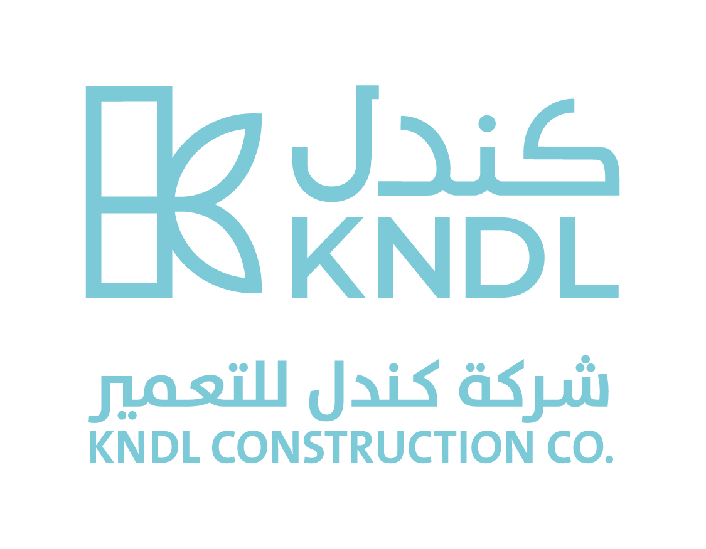

01
Al Munisiyah
مدائن فيلج
مجتمع سكني متكامل يمتاز بتصميم معماري مبتكر، ومساحات خضراء واسعة، ومرافق خدمية وترفيهية تعزز الخصوصية والرفاهية.


info@kndl.com.saسبعة مشاريع سكنية وتجارية تعكس قدرة كندل على تنفيذ المشاريع بمعايير عالية الجودة في الرياض والمنطقة.
مجتمع سكني متكامل يمتاز بتصميم معماري مبتكر، ومساحات خضراء واسعة، ومرافق خدمية وترفيهية تعزز الخصوصية والرفاهية.

مشروع يضم وحدات سكنية عصرية بأنظمة المنزل الذكي، إضافة إلى مكاتب ومعارض تجارية، ومطابخ مدمجة، وتكييف مخفي.
مشروع سكني في شمال الرياض بتصميم عصري يجمع الجمالية المعمارية والراحة الوظيفية لبيئة عائلية متكاملة.

 04
04
فرصة سكنية واستثمارية في موقع مميز قريب من الخدمات والمرافق الحيوية.
 05
05
مشروع قريب من شبكة طرق رئيسية ومرافق حيوية تعزز سهولة الحياة اليومية.
 06
06
بيئة عصرية راقية بتخطيط ذكي للمساحات ووحدات متنوعة للحياة العائلية.
 07
07
مشروع سكني يعكس الراحة والجمال المعماري والتخطيط الذكي للمساحات.
تواصل مع فريق كندل لطلب تفاصيل المشاريع أو مناقشة فرص التعاون.
تواصل معنا